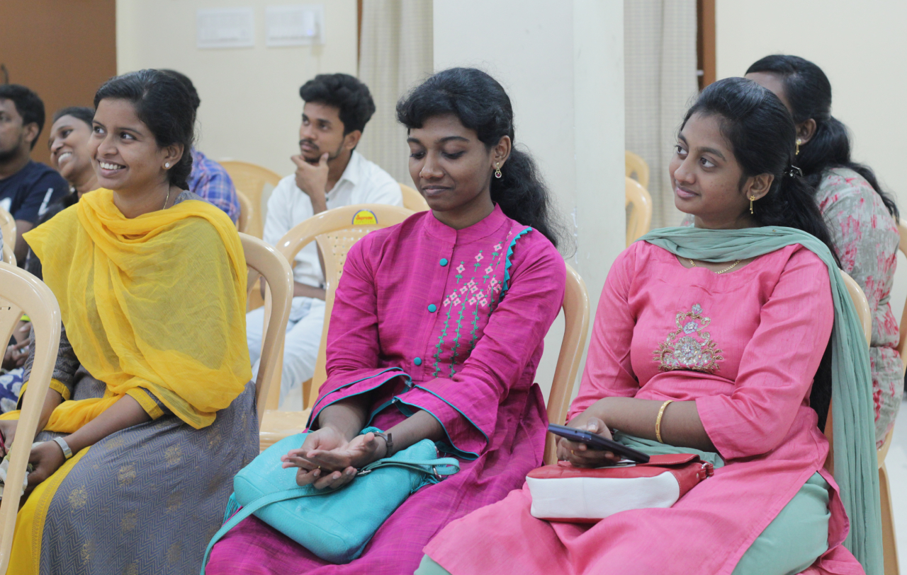

Purpose
Sing and Share is a community of young men and women who follow Jesus wholeheartedly. Our focus is on growing deep and wide. Deep in our relationship with Christ, wide in our relationship with one another.
"He is the one we proclaim, admonishing and teaching everyone with all wisdom, so that we may present everyone fully mature in Christ." Colossians 2:28
What we do
Regular gathering of believers, worshipping God and deeper Bible studies are key highlights of Sing and Share. We focus on deliberately building relationships, sharing the good news, teaching the word of God, mentoring and coaching young people, building leaders and transforming communities.

Who we are
Our core values are
- Welcoming
- Belonging
- Caring
- Relating
- Integrating